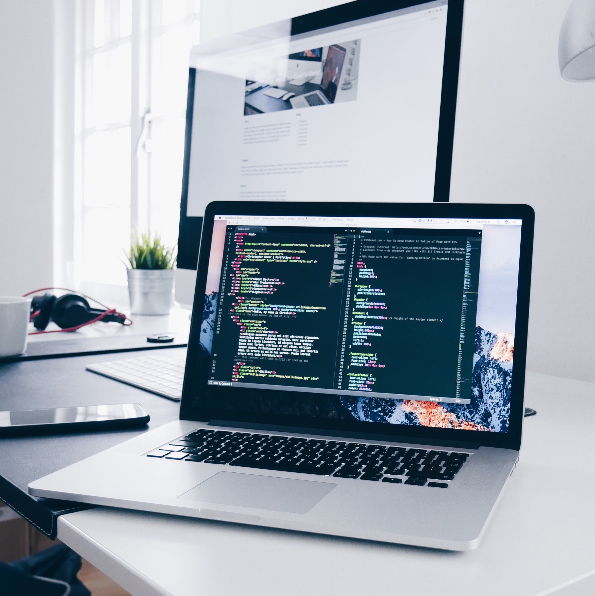

Siamo un'azienda leader nello sviluppo front-end che fornisce servizi di sviluppo front-end interattivi
per creare applicazioni personalizzate, robuste e sicure per le aziende in tutti i verticali.
Utilizziamo gli strumenti e le piattaforme più recenti per progettare e sviluppare potenti interfacce user-friendly.
Seguiamo una metodologia di sviluppo front-end agile, pratiche di programmazione,
standard di codifica e incorporiamo il design dell'interfaccia utente / UX in ogni fase del ciclo
di vita dello sviluppo dell'app, assicurando che le esigenze degli utenti finali
siano fondamentali per l'intero processo di sviluppo dell'applicazione. I nostri
sviluppatori front-end certificati sono altamente qualificati nello sviluppo
di app ricche di funzionalità per tutti gli utenti.